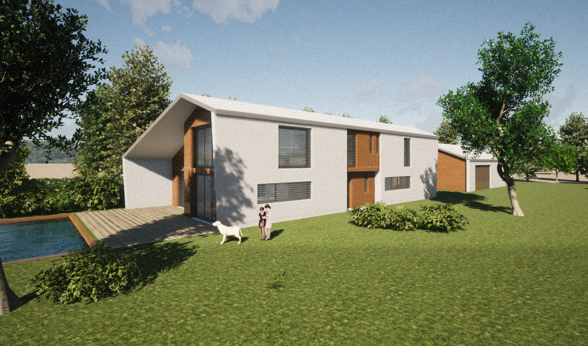
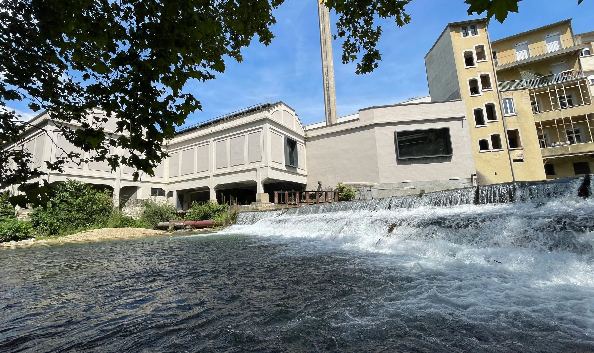

Des espaces qui durent parce qu’ils changent.
Architecte-ingénieur et urbaniste, l’agence intervient de l’étude urbaine à l’aménagement intérieur, avec une même méthode : agile, citoyenne, sobre et végétale.
Sept savoir-faire
Cliquez sur un domaine pour le déplier.
01Habitat et logement collectif
Maisons individuelles, petits immeubles, résidences intergénérationnelles : des logements généreux, ouverts sur un jardin ou une terrasse partagée, qui ménagent la « bonne » distance entre vie privée et voisinage.

02Réhabilitation et friches
Usine textile, bâtiment communal, garage : nous révélons le potentiel caché de l’existant. Réemploi et réhabilitation réduisent fortement l’empreinte carbone — environ −65 % sur la grünboX-Vienne par rapport à du neuf.

03Bureaux et aménagement intérieur
Plateaux de travail flexibles, mobilier modulaire, laboratoires : des espaces lumineux et végétalisés qui s’adaptent aux configurations de travail.

04Équipements et ouvrages techniques
Extension d’école en site occupé, dojo associé à des logements, tour radar préfabriquée montée par hélicoptère à 1 900 m d’altitude.

05Urbanisme et concertation
Études de renouvellement urbain, revitalisation de friches en entrée de ville, ateliers et réunions publiques, dossier de certification ÉcoQuartier en milieu rural.

06Végétalisation et agriculture urbaine
Façades plantées, toitures et terrasses vertes, cours intérieures, serres, champignonnière, aquaponie : le végétal pensé dès l’esquisse.

07Habitat participatif et autoconstruction
Le modèle Récipro-Cité, « cité-jardin du XXIe siècle », et le modèle grünboX, conçu pour l’autoconstruction : des projets menés avec les habitants, qui peuvent réaliser eux-mêmes une partie des travaux.

Quatre principes appliqués à chaque projet
Agile
Garantir une adaptabilité maximale avec un minimum de travaux, et un usage différencié entre le jour et la nuit. La construction et l’entretien des bâtiments représentent environ 50 % des émissions de CO₂ en Europe : la longévité est notre premier levier.
Citoyenne
Des voisinages actifs où chacun est co-créateur de son environnement : jardins communautaires, coworking, ateliers communs. Chacun peut s’investir, sans obligation.
Sobre
Des solutions low-tech, simples et compréhensibles. Réemploi, économie circulaire, eaux de pluie, matériaux naturels — et l’art de faire paraître les espaces plus généreux qu’ils ne le sont.
Végétale
Des bâtiments devenus écosystèmes vivants : murs végétalisés, toits verts, jardins suspendus, cours plantées.
Le végétal →Comment nous accompagnons un projet
Nos projets ont été menés à Vienne, à Lyon et dans sa métropole, en Isère jusqu’au Vercors, en Drôme, en Haute-Savoie et jusque dans l’Indre.
Présenter votre projet →Le site actuel ne détaille pas les missions. Emplacement prévu pour les étapes d’accompagnement (faisabilité, esquisse, permis de construire, consultation des entreprises, suivi de chantier, accompagnement à l’autoconstruction), les types de clients, les conditions et la zone d’intervention précise.